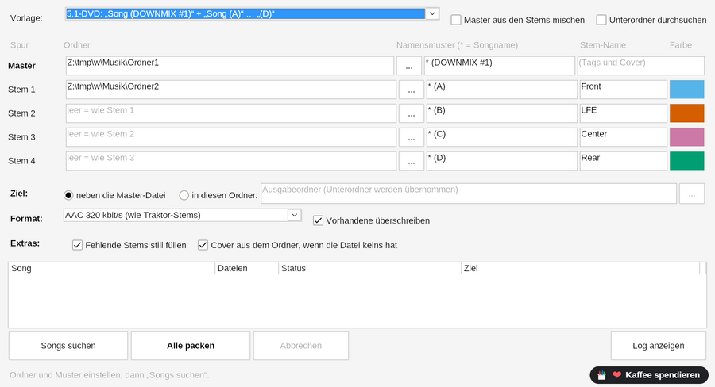

Eigene Stems als
Traktor-Stem-Dateien, im Stapel
Der StemPacker nimmt Spuren, die du schon hast, einen Master und bis zu vier Stems pro Song, und packt sie in eine .stem.mp4, die Traktor als Stem-Datei lädt. Keine KI, keine Trennung: deine Dateien bleiben genau so, wie sie sind. Hunderte Songs in einem Durchgang, aus der DAW, von einer 5.1-DVD oder aus einem anderen Programm.
- Gratis & MIT-Lizenz
- Windows 10 / 11
- Portabel, ohne Installation
- Ohne KI, deine Dateien wie sie sind
- Stapel für ganze Sammlungen
- Deutsch, Englisch, Spanisch

Gemacht für Stems, die es schon gibt
Traktors eigener Stem Creator packt einen Song nach dem anderen. Der StemPacker macht das für einen ganzen Ordner.
Ordner und Muster je Spur
Ein Stern steht für den Songnamen: * (DOWNMIX #1) findet den Master, * (A) bis * (D) die Stems, auch in verschiedenen Ordnern. Alles in einem Ordner geht auch (*_drums, *_bass …).
Deine Namen und Farben
Jeder Stem bekommt den Namen und die Farbe, die du einstellst, zum Beispiel Front, LFE, Center und Rear für 5.1-Kanäle. Traktor zeigt sie direkt am Deck.
Tags und Cover vom Master
Titel, Interpret, Album, BPM, Tonart, Label und Cover kommen aus der Master-Datei. Kein Titel? Dann gilt der Songname. Kein Cover? cover.jpg oder <Song>.jpg aus dem Ordner.
AAC oder verlustfrei ALAC
AAC 320 kbit/s wie Traktors eigene Stems, ALAC verlustfrei 16 Bit oder ALAC 24 Bit mit der Original-Abtastrate (noch im Test).
Lücken im Griff
Songs ohne fertigen Master: aus den Stems mischen, ohne Pegeländerung. Ein Stem fehlt? Mit Stille füllen oder den Song überspringen.
Anhören vor Traktor
Im Download ist der StemPlayer dabei: fertige Datei öffnen, jeden Stem stumm oder solo schalten und das Ergebnis prüfen, bevor es in die Traktor-Sammlung kommt.
So geht's
Vier Schritte, keine Installation.
- Herunterladen und entpacken
StemPacker-<Version>.zipladen, irgendwo entpacken undStemPacker.exestarten. Die AnleitungStemPacker-User-Guide.pdfliegt im selben Ordner (Englisch). - Ordner und Muster einstellenVorlage wählen oder eigene Muster eintragen, dann die Ordner wählen (oder einen Ordner aufs Fenster ziehen).
- Songs suchenDie Liste zeigt jeden Song, wie viele Dateien gefunden wurden und was fehlt.
- Alle packenJeder Song wird zu
<Song>.stem.mp4neben dem Master oder in einem Ordner deiner Wahl. In Traktor Pro 4 laden, fertig.
Ergebnis prüfen mit dem StemPlayer
Der StemPlayer ist im Download dabei. Er spielt alle vier Stems einer fertigen Datei synchron ab, mit Stumm, Solo und Lautstärke je Stem, und zeigt sie mit den eingestellten Namen und Farben.

Teil der StemMaker-Familie
Elospeed StemMaker trennt deine eigene Musik mit KI in Stems und packt sie als Traktor-Stem-Dateien. Der StemPacker ist für den anderen Fall: die Stems gibt es schon, es fehlt nur die Stem-Datei.
Fragen und Antworten
Ist der StemPacker wirklich gratis?
Ja. Der StemPacker ist Open Source unter der MIT-Lizenz. Keine Werbung, kein Konto, keine Bezahlversion.
Trennt er Musik in Stems?
Nein. Der StemPacker benutzt keine KI. Er verpackt Dateien, die du schon hast. Um einen fertigen Song in Stems zu trennen, gibt es StemMaker.
Verändert er meine Dateien?
Nein. Master- und Stem-Dateien werden nur gelesen. Der StemPacker schreibt neue .stem.mp4-Dateien. Wie bei jedem neuen Werkzeug bitte zuerst mit Kopien von ein paar Songs ausprobieren.
Welche Dateien kann er lesen?
WAV, FLAC, AIFF, MP3, M4A, OGG, Opus, W64 und WavPack. Mono-Dateien (zum Beispiel LFE oder Center) kommen auf beide Seiten.
Kann er DVDs einlesen oder .cue-Dateien schneiden?
Nein, mit Absicht. Den Ton holst du mit den Werkzeugen, die du schon benutzt, das Verpacken macht dann der StemPacker.
Windows zeigt „Der Computer wurde durch Windows geschützt“. Ist das schlimm?
Der StemPacker ist nicht digital signiert, weil Zertifikate jedes Jahr Geld kosten. Auf „Weitere Informationen“ und dann „Trotzdem ausführen“ klicken. Der ganze Quelltext liegt auf GitHub, und du kannst den Download auf VirusTotal prüfen oder selbst bauen.
Wo kann ich Fragen stellen oder Ideen vorschlagen?
In den GitHub Discussions von StemMaker. Lesen geht ohne Konto, schreiben braucht ein kostenloses GitHub-Konto.
Bereit, deine Stems zu verpacken?
ZIP laden, den Beispielordner ausprobieren, dann deine eigenen Songs.
Der StemPacker ist ein Ein-Personen-Hobbyprojekt und bleibt gratis. Wenn er dir Zeit spart, kannst du mir auf Ko-fi einen Kaffee spendieren ☕ oder einfach einen Stern auf GitHub geben. Beides ganz freiwillig.